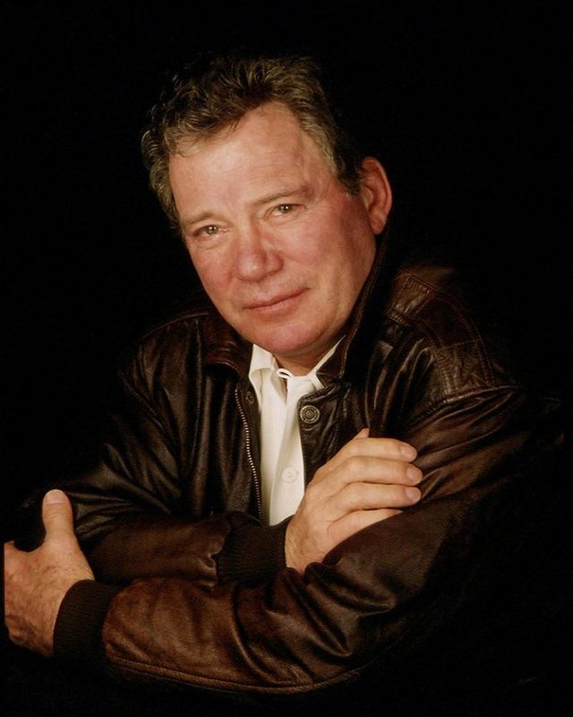

von Thorsten Walch

William Shatner (© Official William Shatner Facebook Group)
(tw) – Nachdem es an dieser Stelle in der letzten Ausgabe des Corona Magazine um das Film- und TV-Schaffen außerhalb von Star Trek des berühmten Leonard Nimoy ging, wollen wir diesmal einen Blick auf die bekanntesten anderweitigen Rollen seines nicht weniger bekannten Kollegen und Film- und Serienvorgesetzten werfen – auf das von Captain James T. Kirk-Darsteller William Shatner.
Ähnlich wie Leonard Nimoy startete auch William Shatner seine Schauspielkarriere am Theater, hatte allerdings während seiner College-Zeit in den frühen 50er Jahren auch bereits für den kanadischen Rundfunk gearbeitet. Allerdings gestaltete sich seine Karriere weit bunter als die seines Freundes und Kollegen.
1954 schloss er sich dem Stratford Shakespeare Festival an, in dessen Rahmen die verschiedensten Stücke des englischen Dichterfürsten aufgeführt wurden, und der junge William Shatner war hier erwartungsgemäß anfangs in kleinen Rollen zu sehen, mit der Zeit jedoch erkannte man sein Talent und setzte ihn auch zunehmend in tragenden Parts ein. William Shatners großes Vorbild war dabei stets der weltberühmte britische Schauspieler Sir Laurence Olivier, dem er – mehr oder weniger erfolgreich - darstellerisch nachzueifern versuchte,
1957 wurde er jedoch immerhin mit dem renommierten Theaterpreis »Tyrone Guthrie Award« als »vielversprechendster Jungschauspieler« ausgezeichnet.
Das Theaterstück Tambourlaine, in dem Shatner die zweite männliche Hauptrolle spielte, wurde ein so großer Erfolg in Kanada, dass man einen Einsatz am Broadway wagte – hier leider mit deutlich weniger Erfolg. Allerdings konnte William Shatner darin recht gut überzeugen, so dass ihm Twentieth Century Fox einen Siebenjahres-Vertrag mit einer wöchentlichen Bezahlung von 500 Dollar anbot. In einem Anflug von Überheblichkeit lehnte Shatner jedoch ab, da er seine berufliche Zukunft in dieser Zeit noch auf den »Brettern, die die Welt bedeuten« sah.
Stattdessen kehrte er nach Kanada zurück und schrieb dort das Theaterstück Dreams, in dessen Aufführungen er neben der jungen Schauspielerin Gloria Rand spielte, die er bereits von den Aufführungen von Tambourlaine kannte und die kurze Zeit später seine erste Ehefrau wurde.
1957 schließlich besuchte er die MGM-Studios und konnte dort so gut überzeugen, dass man ihm einen Fünfjahres-Vertrag anbot, den er diesmal annahm.
William Shatners erster Leinwandauftritt erfolgte noch im gleichen Jahr in dem großangelegten Leinwand-Drama Die Brüder Karamasov nach Fjodor Dostojewski, in dem er neben den damaligen Hollywood-Superstars Yul Brynner und Maria Schell immerhin in der dritten Hauptrolle zu sehen war.
Obwohl der Film ein ansehnlicher Erfolg wurde und die allgemeine Kritik auch manches lobende Wort für den Jungschauspieler Shatner fand, war selbiger mit dieser Art Arbeit nicht glücklich. Er löste den Vertrag mit MGM und ging nach New York, wo er zunächst am Broadway erneut Theater spielte, unter anderem in dem Stück Die Welt der Suzie Wong, wo die asiatisch-stämmige Schauspielerin France Nuyen seine Bühnenpartnerin war, die er einige Jahre später in der Star Trek-Episode Brautschiff Enterprise wiedersehen sollte – hier spielte sie die Rolle der zickigen Herrscherin Elaan. Während der Theateraufführungen kritisierte er sie des Öfteren heftig in ihrer Abwesenheit, was seinem Image nicht eben dienlich war.
1958 jedenfalls wurde William Shatner mit dem »Theatre World Award« als »Bester Schauspieler« ausgezeichnet, und es sah ganz danach aus, als würde der junge kanadische Mime in diesem Bereich sein Glück finden. Doch obwohl er in den Folgejahren weiterhin häufig in den unterschiedlichsten Bühnenstücken zu sehen war, brachte die Theaterarbeit nicht den erhofften Erfolg für William Shatner, der zugegebenermaßen schon immer eine etwas problematische Selbsteinschätzung hatte.
Nachdem er die Hauptrolle in der damals im Entstehen begriffenen Arzt-Serie Dr. Kildare ausgeschlagen und diese dem jungen Briten Richard Chamberlain zu Weltruhm verholfen hatte (immerhin hatte William Shatner im Lauf der Jahre gleich fünf Gastauftritte in dieser Serie), erkannte er schließlich, dass er sich doch auf den Bereich Film und Fernsehen verlegen musste, wenn er langfristig im Geschäft zu bleiben gedachte.
So wirkte Shatner im Jahr 1960 erstmals in der erfolgreichen phantastischen Anthologien-Serie The Twilight Zone (die in Deutschland unter verschiedenen Titeln ausgestrahlt wurde, deren bekanntester Unwahrscheinliche Geschichten lautete) mit, und zwar in der Episode Ein Penny für die Zukunft.
1961 sah man ihn dann in einer vergleichsweise kleinen Rolle in dem monumentalen Drama Das Urteil von Nürnberg unter anderem neben Spencer Tracy, Marlene Dietrich und Burt Lancaster als chauffierenden Offizier, und ein Jahr später in dem aufwühlenden Rassismus-Drama Weißer Terror des innovativen Low-Budget-Filmers Roger Corman als faschistischen Volksverhetzer, wo er eine darstellerische Meisterleistung absolvierte.
1963 kehrte er dann noch einmal in die Twilight Zone zurück und spielte die Hauptrolle in der Episode Portrait eines ängstlichen Mannes – er verkörperte einen verunsicherten Flugzeugpassagier, der auf der Tragfläche ein monströses Wesen sieht, das sich an den Triebwerken zu schaffen macht. Bis heute ist diese Episode eine der bekanntesten Folgen der Serie, was nicht zuletzt sicher auch an Shatners genial-hysterischer Spielweise lag. Es folgten Gastauftritte in etlichen populären Fernsehserien der 60er Jahre, darunter Solo für O.N.K.E.L. (wo er erstmals neben Leonard Nimoy spielte), Rauchende Colts, Big Valley oder der Twilight Zone-Konkurrenzserie The Outer Limits.
1965 erhielt er die Hauptrolle in der hierzulande niemals ausgestrahlten Anwaltsserie For The People, die jedoch nach nur 13 Episoden eingestellt wurde.
Was dann kommt, ist Geschichte – William Shatner bekam die Rolle des Captain James T. Kirk in Star Trek und war in den Jahren von 1966 bis 1969 bestens beschäftigt.
Nach dem Ende der Serie kam es allerdings zu einem ernstlichen Karriereknick. Zwar war er nach wie vor in damals populären TV-Serien wie Make-Up und Pistolen, Mannix, Columbo, Der Sechs-Millionen-Dollar-Mann oder Kung-Fu zu sehen, doch wirklich große Nachfolge-Rollen seines Kirk-Erfolges blieben aus. Shatner war häufiger wieder am Theater zu sehen und drehte weiterhin Filme, an die er sich heute vermutlich nicht mehr sehr gern erinnert, darunter den billig produzierten Gangsterfilm Big Bad Mama (1974) oder den Horrorstreifen Nachts, wenn die Leichen schreien (1975). In Mörderspinnen (1977) war er allerdings in einer ausgesprochenen Trashfilm-Perle zu sehen, die noch heute ihren Reiz besitzt.
Mit der an und für sich recht innovativen Westernserie Die Küste der Ganoven, wo er einen als Verkleidungskünstler agierenden Detektiv im Wilden Westen darstellte, machte er eine herbe Bauchlandung, da die Serie nach nur wenigen Episoden eingestellt wurde.
Wirklich besser wurde es erst Ende der 70er Jahre, als Star Trek den Weg ins Kino fand und ihm und auch den anderen Darstellern der Serie ein riesiges Comeback bescherte.
So spielte er von 1982 bis 1986 in der ziemlich erfolgreichen und immerhin 91 Episoden umfassenden Krimiserie T.J. Hooker den titelgebenden aufrichtigen Streifenpolizisten, Anfang der 90er Jahre moderierte er dann die Reihe 911, die als US-Pendant zu Aktenzeichen: XY...ungelöst! gelten kann.
Ferner spielte er von 1995 bis 1996 neben Greg Evigan eine der Hauptrollen in der auf der von ihm selbst verfassten Science Fiction-Romanreihe Tek War basierenden TV-Spielfilm- (4 Filme) und später auch Fernsehserie (18 Episoden) und war in Kinofilmen wie Miss Undercover (2000) und Miss Undercover 2 neben Sandra Bullock und Michael Caine sowie in Showtime (2002) neben Robert De Niro und Eddie Murphy zu sehen. Auch war er immer wieder einmal für einen Spaß gut wie in den geekigen Komödienspäßen Free Enterprise und Fanboys.
Einen riesigen Erfolg konnte William Shatner dann noch einmal von 2004 bis 2008 mit der satirischen Anwaltsserie Boston Legal verbuchen, wo er in 101 Folgen als eigensüchtig-exzentrischer Senior-Anwalt Denny Crane auftrat.
Bis heute ist William Shatner, mittlerweile 84 Jahre alt, in der Medienwelt präsent – sei es als Autor von unterschiedlichen Romanen und Sachbüchern, höchst eigenwilligen Sprechgesang-Interpretationen bekannter und eigener Songs (er hat mehrere Musikalben veröffentlicht), Moderator von TV-Dokumentationen rund um oder auch völlig fernab von Star Trek, Auftritten in Filmen und Fernsehserien und natürlich immer wieder einmal Star Trek-Conventions, auf denen er gern seine Anekdoten kundtut.
Wenn man den Gerüchten Glauben schenken darf, dann gibt es sogar die Aussicht darauf, ihn im kommenden neuen Star Trek-Film in einem Cameo-Auftritt zu erleben – na, wenn das nichts wäre, Mr. Shatner!
Quellen:
Das Star Trek-Universum, Ralph Sander, Heyne-Verlag
http://de.wikipedia.org/wiki/William_Shatner
https://www.facebook.com/groups/272733319504206/ - Official William Shatner Facebook Group